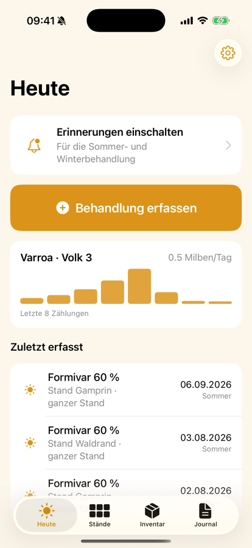
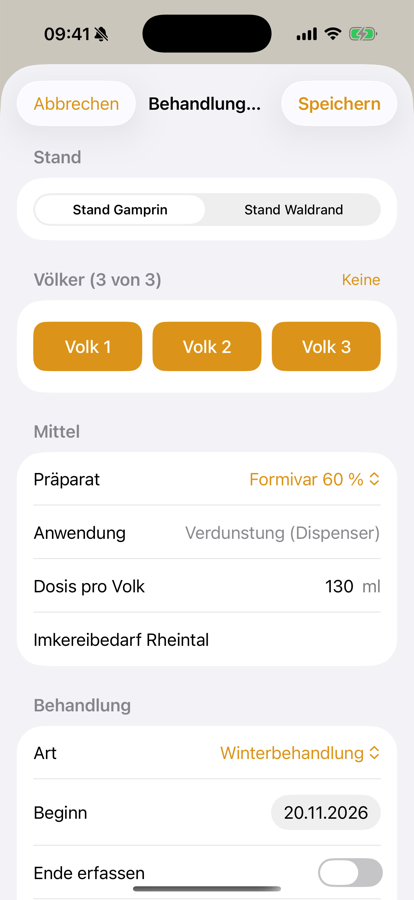

Für Imkerinnen und Imker in der Schweiz und in Liechtenstein. Am Jahresende geben Sie ein PDF ab, das der Vorlage des BLV entspricht.

Ein Journal pro Stand, mit den Spalten der BLV-Vorlage, gefolgt von der Inventarliste. Zum Drucken, Mailen oder für die Bieneninspektion.
| Behandlungsbeginn | Behandlungsende | Volk / Stand Nr. | Handelsname, Applikationsart | Dosierung | Art der Behandlung | Vor der letzten Honigernte? | Bezugsquelle | Bemerkung |
|---|---|---|---|---|---|---|---|---|
| 28.07.2025 | 11.08.2025 | ganzer Stand | Formivar 60 %, Verdunstung | 130 ml pro Volk | Sommerbehandlung | nein | Imkereibedarf | 1. Sommerbehandlung |
| 01.09.2025 | 15.09.2025 | 1, 3, 4 | Formivar 60 %, Verdunstung | 130 ml pro Volk | Sommerbehandlung | nein | Imkereibedarf | hoher Milbenfall |
| 12.12.2025 | ganzer Stand | Oxuvar 5.7%, Träufeln | 30 ml pro Volk | Winterbehandlung | nein | Apotheke | brutfrei kontrolliert |
Beispiel mit erfundenen Daten. Das echte PDF ist A4 quer und enthält auf den Folgeseiten die Inventarliste mit Eingang, Bezugsquelle, Rückgabe und Entsorgung.
